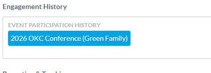
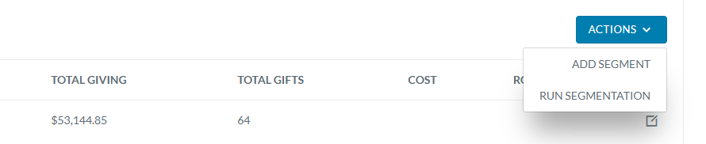
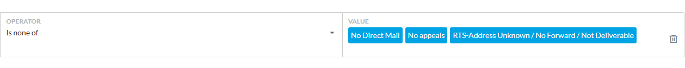
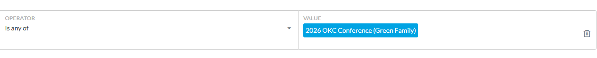

Virtuous gives us three tools for organizing contacts: Tags, Custom Fields, and Campaigns. They each do different things. Using the wrong one is how databases turn into junk drawers. This guide helps you pick the right tool every time.
Which Tool Do I Use?
Every time you need to record something about a contact, start with one question: what kind of information is this? The answer points you to the right tool. Each of these three options serves a different purpose, and they don't overlap much. Pick the wrong one and you'll either clutter up the system or miss out on reporting you could have had.
If you're still not sure, a good rule of thumb: if it has a year in the name, it's probably not a tag. "Gala 2024" is history (Custom Field) or an outreach effort (Campaign). "No direct mail" is a current status (Tag).
All Three at a Glance
| Tag | Custom Field | Campaign | |
|---|---|---|---|
| Best for | Current status | Past events & history | Planned outreach & ROI |
| Answers | "What is true about them?" | "What did they do?" | "What did we send, and did it work?" |
| Where it lives | Every dropdown & filter | Engagement History only | Campaigns tab only |
| Financial tracking | No | No | Yes |
| Dynamic grouping | No (manual) | Yes (via query) | Yes (via query) |
| Permanent record | Often deleted to reduce clutter | Always | Always |
Now let's look at each one in detail.
1. Tags: Current Status, Not History
Tags work best for ongoing states that affect how we talk to someone. Think of them like labels on a folder. They tell you how to handle this contact today.
A good tag is timeless. "No direct mail" is just as true next year as it is today. "Capacity 1M-3M" stays relevant until the research changes. You'd never need to delete these to clean things up.
Why We Don't Use Tags for Events
Here's the thing: tags show up in every dropdown, every filter, on every screen. If you create a tag for every event, five years from now you'll be scrolling through "Gala 2021," "Coffee Meetup 2022," "Fall Banquet 2023," and a dozen more dead entries just to find "No direct mail."
That's exactly what happened before. The tag list got so long that the useful tags were buried in noise. Cleaning it up meant deleting old tags, which meant losing the historical record. Nobody won.
So now we keep the tag list short and focused. Every tag in the list is something you'd actually use on a regular basis. Past events go somewhere else.
2. Custom Fields: History and One-Off Events
For past events, conferences, donor lunches, mission trips, or anything where you want to remember "this person was part of that" but don't need to track giving tied to it, use the Event Participation History multi-select field.
This field lives in the Engagement History group on the contact record. It's permanent, searchable, and completely out of the way. You can query on it anytime, but it won't show up in your tag dropdowns.

The big advantage here: the record is permanent. With tags, people eventually delete old event tags to keep things clean, and the history is gone. With a custom field, the data stays on the contact forever and doesn't clutter anything else.
3. Campaigns: Planned Outreach with Financial Tracking
When you're doing planned outreach (a direct mail appeal, an email campaign, a giving challenge) and want to measure the financial return, that's a Campaign. Campaigns connect who you reached to what they gave.
This is the structure we're moving into for all planned outreach. It uses Queries in Virtuous to enroll members, so it's built for organized sends and segmented audiences, not one-off invites. → Active Campaigns
Why Campaigns Beat Tags for Outreach Tracking
Say you hosted a conference and want to know: did attending lead anyone to give? Here's what each tool gives you:
| Using a Tag | Using a Campaign | |
|---|---|---|
| Historical Record | Yes, but it clutters the tag list forever | Yes, lives in the Campaigns tab. Out of the way. |
| Reporting | You can see who was there | Who was there AND if they gave because of it |
| ROI Tracking | No | Yes. Total cost vs. total gifts from attendees. |
| Ease of Filtering | Simple tag filter | Just as simple using the "Campaign Membership" filter |
| Enrollment | Manual. Add/remove contacts one by one. | Automated via Saved Queries + Run Segmentation |
The Campaign Workflow
Campaigns need a few connected pieces. Here's how they fit together:
After linking a query to a Campaign Segment, you must click Actions > Run Segmentation. Until you do, the segment may show Total Gifts (money received with that code) but 0 Total Contacts. Running segmentation enrolls the people from your query so reporting actually works.

Putting It Into Practice
Now that you know which tool to use, here's how to use each one with real examples from our system.
Example: Building a Mailing List That Respects Preferences
We're sending the 2026 Easter direct mail appeal (segment code EA0326DM1). We need everyone eligible to get it, but we have to respect the communication preferences people have set. This is where tags do their job.
These contacts want zero physical mail of any kind.
These contacts are fine with informational mail but have opted out of fundraising asks.
No point mailing to a bad address. Verify these separately.

This is where tags shine. They're actionable filters you use every time you build an audience. "No direct mail" isn't trivia. It decides who gets mail today.
Example: Querying Event Participation History
We want to follow up with everyone who attended the 2026 OKC Conference. We don't need a campaign for this. We just want the list.

This does the same thing as tagging someone "OKC Conference 2026," but it doesn't pollute your tag list. And the record is permanent because there's no reason to ever delete it.
Example: Full Campaign Setup (Book Boom)
The 2026 Book Boom was a relationship-building effort where we mailed books to about 200 people. We want to know if it moved the needle on giving. That means we need all three pieces working together.
Without the campaign layer, you'd know who got a book (from the custom field) but have no idea if it led to giving. That's the difference.
Key Takeaways
- Tags = current status that affects how we communicate. Keep the list clean. If it's not timeless, it's not a tag.
- Custom Fields (Event Participation History) = permanent history. Use for events and participation where giving doesn't need to be tracked directly.
- Campaigns = planned outreach with financial tracking. Use when you need to know: did this effort generate donations?
- Queries are the glue. They turn field values and tags into dynamic, self-updating lists.
- When using Campaigns, always Run Segmentation to connect contacts to financial data.
- Rule of thumb: if it has a year in the name, it's probably a Custom Field, not a tag.